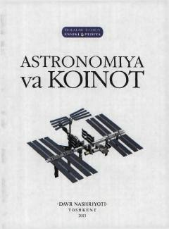

AVBolalar uchun koinot, yulduzlar va astronomiya sirlari haqida qiziqarli ensiklopediya.
Ushbu ensiklopediya o'rta maktab yoshidagi bolalar uchun mo'ljallangan bo'lib, koinot sirlari, yulduzlar, sayyoralar va astronomiya fanining rivojlanish tarixi haqida ma'lumot beradi. Kitobda Quyosh sistemasi, galaktikalar va yulduz turkumlari sodda va tushunarli tilda yoritilgan.